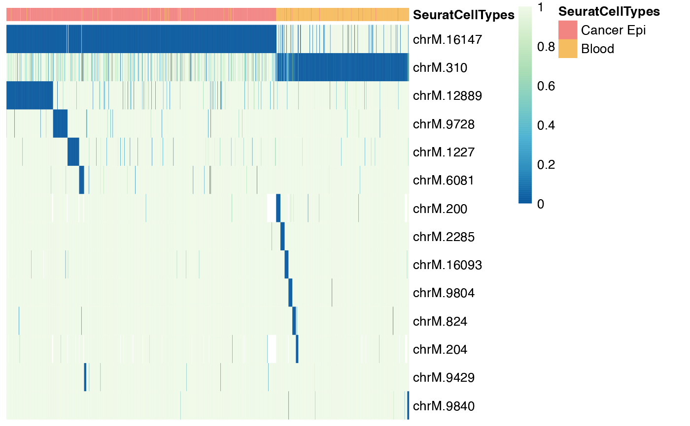
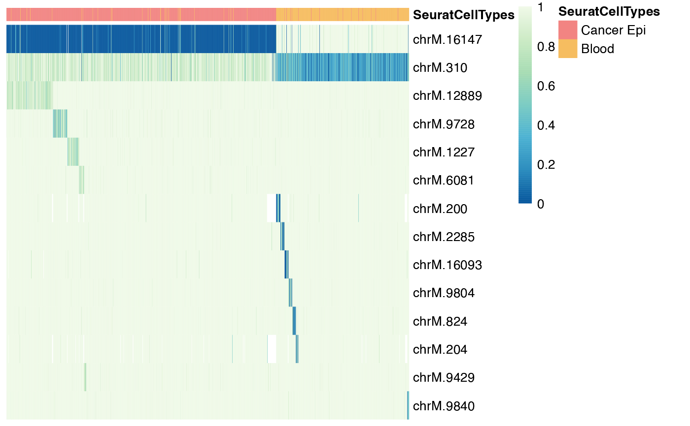
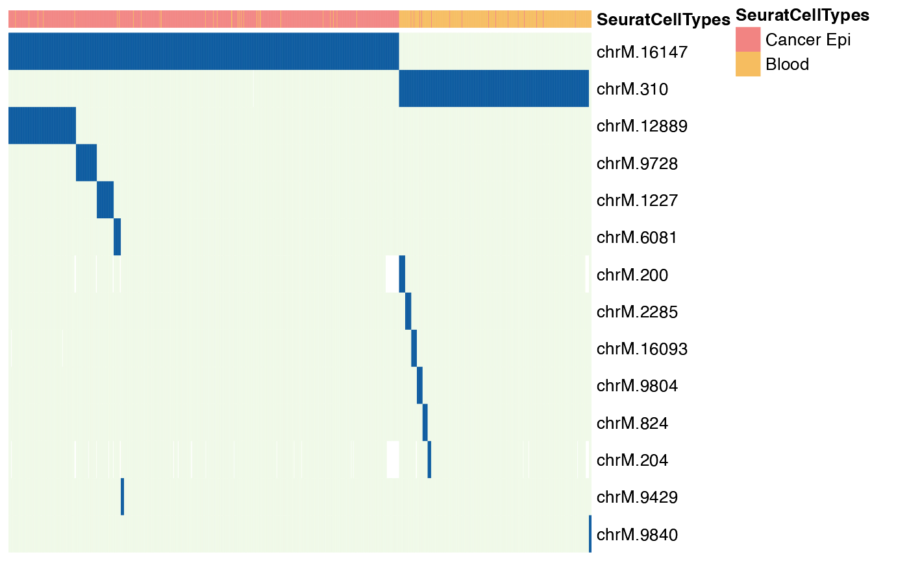

plot_heatmap.RdHeatmap plot
plot_heatmap(mtmutObj, type = "p", cell_ann = NULL, ann_colors = NULL, ...)an object of class "mtmutObj".
a string of plot type, "p" for p-value, "af" for allele frequency.
a data.frame of cell annotation, with rownames as cell barcodes, please refer to pheatmap for details.
a list of colors for cell annotation with cell annotation as names, please refer to pheatmap for details.
The pheatmap output
# load the data
## Use the example data
f <- system.file("extdata", "mini_dataset.tsv.gz", package = "scMitoMut")
## Create a temporary h5 file
## In real case, we keep the h5 in project folder for future use
f_h5_tmp <- tempfile(fileext = ".h5")
## Load the data with parse_table function
f_h5 <- parse_table(f, sep = "\t", h5_file = f_h5_tmp)
# open the h5f file
x <- open_h5_file(f_h5)
# run the model fit
run_model_fit(x)
#> chrM.200
#> chrM.204
#> chrM.310
#> chrM.824
#> chrM.1000
#> chrM.1001
#> chrM.1227
#> chrM.2285
#> chrM.6081
#> chrM.9429
#> chrM.9728
#> chrM.9804
#> chrM.9840
#> chrM.12889
#> chrM.16093
#> chrM.16147
#> used (Mb) gc trigger (Mb) limit (Mb) max used (Mb)
#> Ncells 1739898 93.0 2952795 157.7 NA 2952795 157.7
#> Vcells 3420427 26.1 8388608 64.0 16384 8388472 64.0
x
#> mtmutObj object
#> -------------------------------------------------
#> h5 file: /var/folders/46/vh_b6qzs5kzgdhvx1kcn7hyh0000gn/T//RtmpvCtNq4/file15554d763b19.h5
#> Available loci: 16
#> Selected loci: 16
#> Available cells: 1359
#> Selected cells: 1359
#> Loci passed the filter: 0
#> filter parameters:
#> min_cell: 1
#> model: bb
#> p_threshold: 0.05
#> p_adj_method: fdr
# Filter the loci based on the model fit results
x <- filter_loc(x, min_cell = 5, model = "bb", p_threshold = 0.05, p_adj_method = "fdr")
# set the cell annotation
f <- system.file("extdata", "mini_dataset_cell_ann.csv", package = "scMitoMut")
cell_ann <- read.csv(f, row.names = 1)
# Prepare the color for cell annotation
colors <- c(
"Cancer Epi" = "#f28482",
Blood = "#f6bd60"
)
ann_colors <- list("SeuratCellTypes" = colors)
# plot the heatmap for p-value
plot_heatmap(x, type = "p", cell_ann = cell_ann, ann_colors = ann_colors, percent_interp = 0.2)

# plot the heatmap for allele frequency
plot_heatmap(x, type = "af", cell_ann = cell_ann, ann_colors = ann_colors, percent_interp = 0.2)

# plot the heatmap for binary mutation
plot_heatmap(x, type = "binary", cell_ann = cell_ann, ann_colors = ann_colors, percent_interp = 0.2)
